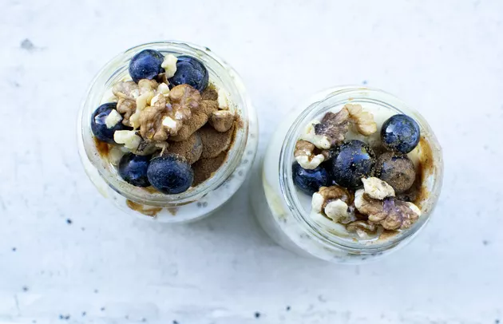

If you want to start off the day benefiting your brain, there's one breakfast neurologists, neurosurgeons and other brain experts recommend: Overnight oats with walnuts and blueberries.
When making standard overnight oats, all you have to do is the following:
- Soak ½ cup rolled oats with 1 cup of almond milk.
- Refrigerate overnight.
- In the morning, top with fresh blueberries and walnuts.
You're more likely to eat healthy when you have a nutritious breakfast waiting for you in the morning, and this easy one helps to boost your brain health from the get-go.
"The foods we eat directly relate to how our brain functions," says Randall Wright, MD, a neurologist at Houston Methodist Hospital. "When it comes down to diet and eating, we are seeing now that it's all about brain energy. The brain uses a large portion of energy compared to the rest of the body."
That's why it's important to fuel your brain with foods that help it combat stress and damage, which is exactly what this powerhouse breakfast will help you do. Here are four benefits of an overnight oats breakfast with blueberries and walnuts.
1. Blueberries Have Compounds That Protect Your Brain
The delicious blueberry can help guard your brain against damage and improve its long-term function. Brain experts tend to recommend three diets for a healthy brain — all of which recommend fruit, and one of which recommends blueberries specifically.
"Typically, when I speak to patients about diets they should focus on for brain health, there are three main diets I refer them to: the Mediterranean Diet, the MIND diet and the DASH diet," says Philip Stieg, MD, a neurosurgeon and founder of the Weill Cornell Brain and Spine Center.
Here's what you need to know about each of those diets:
- The Mediterranean Diet: This diet is rich in fruits, vegetables, fish, high-fiber breads, whole grains and healthy fats, and is linked to lower rates of stroke, Alzheimer's disease and other dementia, depression, stroke and Parkinson's disease, per Michigan Medicine.
- The DASH Diet: Also known as Dietary Approaches to Stop Hypertension, this diet focuses on foods that lower blood pressure and "bad" LDL cholesterol, and recommends vegetables, fruits, whole grains, fat-free or low-fat dairy products, poultry, beans, nuts and vegetable oils, per the National Heart, Lung, and Blood Institute. Dr. Stieg notes that diets that are healthy for the heart tend to be healthy for the brain, too.
- The MIND Diet: The most famous diet for brain health, the MIND Diet (Mediterranean-DASH Intervention for Neurodegenerative Delay) is a hybrid of the DASH diet and Mediterranean diet and was formulated by researchers to emphasize foods that affect brain health. It includes plenty of vegetables, meat-free meals, nuts, occasional fish and olive oil, and specifically calls out blueberries, which have been linked to slower rates of cognitive decline, per the Mayo Clinic.
The MIND diet recommends two or more servings per week of any type of berry but calls out that blueberries may be potentially more beneficial. Older adults who ate the most blueberries and strawberries had the slowest rates of cognitive decline in a July 2012 study in the Annals of Neurology. The California Strawberry Commission partially funded the study, but it is worth noting because it reviewed data of over 16,000 participants from the Nurses' Health Study over 20 years.
In the study, those who ate the most blueberries and strawberries delayed cognitive aging by up to 2.5 years. Anthocyanidins, which are a subclass of flavonoids, can cross the blood-brain barrier to accumulate in areas of the brain responsible for learning and memory, like the hippocampus.
"It's clear that berries, and particularly blueberries, have direct benefits," says Marwan Sabbagh, MD, an Alzheimer's expert at the Cleveland Clinic. "Flavonoids are very potent free radical scavengers and antioxidants."
In other words, flavonoids can help protect against the effects of oxidative stress and inflammation that naturally occur in your body. Your body creates free radicals, unstable molecules that cause oxidative stress (which in turn can lead to cell damage), when you digest food, exercise, smoke or are exposed to environmental factors like sunlight or air pollution, per the National Institutes of Health (NIH). Oxidative stress is thought to play a role in a variety of diseases, including those that affect the brain such as Alzheimer's disease and Parkinson's disease.
"The chemicals in blueberries are what the brain needs to protect itself," Dr. Wright says. "When our diets don't reflect that, that's when disease may start."
Antioxidants in blueberries can help prevent or delay cell damage in your body, but it's best to get them through food — while diets high in antioxidant-rich fruits and vegetables have been shown to be healthy, antioxidant supplements have not been shown to be helpful in preventing disease, per the NIH.
2. Walnuts Contain Brain-Healthy Fats
Nuts like walnuts are rich in vitamin E, which is known for its brain-protective qualities, per the Mayo Clinic. The MIND Diet recommends eating a handful of nuts at least five times per week in place of processed snacks like chips — just opt for the raw, unsalted kind without added sodium, sweeteners or oils.
Walnuts, in particular, pack the most alpha-linolenic acid (ALA), a type of omega-3 fatty acid, than any other nut. They also have higher levels of polyphenolic compounds (a type of antioxidant) than any other nut. Both ALA and polyphenolic compounds may help lower oxidative stress and inflammation — which are two causes of cognitive decline, according to the American Society for Nutrition.
"The cells in our body have cell walls constructed of lipids, or fats," Dr. Stieg says. "Good fats help construct a normal, healthy cell wall, so you want to make sure you have the appropriate fats in your diet."
Eating more walnuts increased adults' performance on cognitive tests, regardless of how old they were, in a December 2014 study in The Journal of Nutrition, Health & Aging. Like many other walnut studies, this one was funded by the California Walnut Council. However, it's still significant because it was the first large representative study of walnut intake and cognitive function, and it included all available cognitive data across multiple National Health and Nutrition Examination Surveys (NHANES).
3. Oats Give You Sustained, Brain-Healthy Energy
"Our brains were not designed to have an abundance of caloric foods in our system, and in the modern day, there's an overabundance of food high in calories and glucose, which is detrimental to the brain," Dr. Wright says.
"Maintaining steady glucose levels is extremely important for the brain, and that's where the oats come in."
The beta-glucan fiber in oats can help to prevent sharp rises in blood sugar and insulin levels after your meal, and could also benefit your gut health as the fiber is broken down and fermented by bacteria in your intestines, per the Harvard T.H. Chan School of Public Health.
More than 250 adults with type 2 diabetes were given a 30-day dietary intervention, with follow-up at one year, in a December 2013 randomized controlled trial published in the European Journal of Clinical Nutrition. Two of the intervention groups received either 50 grams or 100 grams of whole grain oats every day, along with a healthful diet. The other two groups had either no dietary change or followed a generally healthy, high-fiber and low-fat diet.
The participants in the oat groups saw a significant reduction of blood glucose post-meal compared to control groups, and eating more oats led to a greater reduction. The participants in the 100-gram oat group even showed modest weight loss at one year.
4. It Helps Protect Your Heart, Which Can Protect Your Brain
Your heart health is very closely connected to your brain health, and overnight oats with blueberries and walnuts benefits both.
Your heart sends blood through vessels all around your body, including your brain, and damage to those vessels can lead to serious health conditions, such as heart disease, stroke and dementia, per the U.S. Centers for Disease Control and Prevention (CDC). By keeping your blood vessels healthy, you'll have a stronger heart and brain.
By eating wholesome foods like whole grains and fruits and limiting foods with saturated fats, added sugar and too much sodium, you can reduce your risk of heart disease, stroke and vascular dementia, per the CDC.
When you opt for overnight oats with walnuts and blueberries in place of, say, bacon or scones in the morning, you're doing both your heart and your brain a favor.
"Saturated fat isn't just bad for heart disease, but it's also bad for brain health," Dr. Sabbagh says. "That's why you want to cut the red meat, lard, butter and fried foods. There are a lot of reasons as to why following the MIND diet is good for the brain — both in terms of what it does have and what it doesn't have."
Oats contain soluble fiber, which may help decrease your LDL cholesterol and therefore lower total blood cholesterol, per the Mayo Clinic. And high-fiber foods may also reduce blood pressure and inflammation, leading to further benefits for the heart. In fact, every 10 grams of fiber daily was associated with a 15-percent lower risk of death from heart disease in a May 2012 study of more than 306,000 participants in the European Journal of Clinical Nutrition.
More Tips for Making Your Best Overnight Oats Brain Breakfast
- Skip the added sugar: Stick to plain oats that aren't loaded with sugar when you make overnight oats or regular oatmeal. "Eat the whole oats, because the packaged instant oatmeal can have a lot of sugar in it, so you're defeating the purpose," Dr. Sabbagh says. Plus, the blueberries will add natural sweetness!
- Try other toppings: You don't have to stop at blueberries and walnuts! The MIND Diet generally calls for nuts and berries, so add almonds, strawberries and other toppings as well.
- Start small: Making overnight oats won't transform your brain, well, overnight — but taking little steps like upgrading what you eat for breakfast can still make a difference. "Any improvement is good, and it starts with what you put in your grocery basket," Dr. Sabbagh says. "Anything is an improvement over nothing."